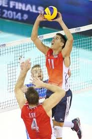
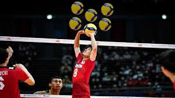
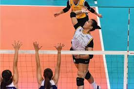
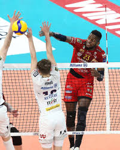
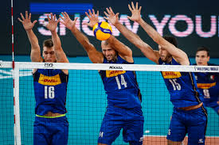
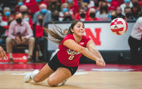
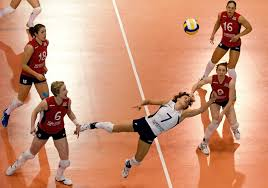

Positions in Volleyball
Setter
 Primary Role
The setter's main job is to deliver the second contact of every rally, taking the pass from a teammate and "setting" the ball up for an attacker to spike. Almost every offensive play runs through the setter, so they touch the ball more than anyone else on the court.
Key Responsibilities
The setter reads the defense, decides which attacker has the best matchup, and delivers a precise set to that player — all in a split second. They need to disguise their intentions so blockers can't anticipate where the ball is going. They also run the team's offensive system, calling plays and managing tempo.
Physical Skills
Setters need exceptional hand-eye coordination and very clean, controlled hand technique. Setting is done with both hands above the forehead in a "window" shape — the ball must be released cleanly or it gets called as a lift or double contact. Quick footwork is critical since they need to get under every second ball, even off a bad pass.
Mental Skills
This position is as much mental as physical. A great setter has a high volleyball IQ, a short memory (since bad sets happen), strong communication skills, and the ability to keep attackers confident and engaged throughout a match.
Offensive Weapons
Setters aren't just distributors — they can also attack. A setter "dump" (tipping or attacking the ball on the second contact, usually over the net) is a common surprise weapon, especially when blockers aren't expecting it.
Types of Sets
Setters use a wide vocabulary of sets — high outside sets, quick middle sets (called a "1" or "quick"), back sets, pipe sets to the middle-back, and more. Varying the tempo and location of sets is what keeps a defense off balance.
In the Back Row
When the setter rotates to the back row, they typically play as a passer and defensive player as well, though their setting duties don't change. Many teams use a 5-1 system (one setter) or a 6-2 system (two setters, where one is always in the front row).
Outside Hitter

Primary Role
The outside hitter is one of the most versatile players on the court. They are considered a "pin hitter," meaning they attack from the left pin (antenna) of the net. Unlike the opposite hitter — who also attacks from a pin but on the right side — the outside hitter carries a significant serve receive responsibility in addition to their offensive role.
Serve Receive & Passing
Outside hitters are typically among the primary passers on the team. They are expected to handle a large share of the opponent's serves, meaning they must be comfortable and reliable in serve receive before even thinking about attacking. This dual responsibility makes them one of the most demanding positions to play well at a high level.
Attacking
Outside hitters approach and attack from the left side of the net. They most commonly receive high, arching sets from the setter and must be able to put the ball away against one or two blockers. A good outside hitter can hit line, angle, cut shot, and roll shot — reading the block and adjusting on the fly.
Physical Skills
Outside hitters need a strong, consistent approach and jump, excellent arm swing mechanics, and the ability to swing from off-speed sets or bad passes. Because they pass and then immediately transition to attack, their footwork and court awareness must be sharp at all times.
Mental Skills
Playing outside hitter requires the ability to shift quickly between a defensive mindset (passing) and an offensive one (attacking) within the same rally. They must stay composed under pressure, as they are often the go-to option when the setter needs a reliable arm to put the ball down.
Back Row Role
When rotating to the back row, outside hitters continue to serve receive and also play as defensive specialists. Many outside hitters are skilled enough to stay on the court in all six rotations without needing a substitution, making them one of the most complete players on the roster.
Middle Blocker
Primary Role
The middle blocker is the anchor of the team's defense at the net. Their primary job is to block opposing attacks, but they are also a key offensive weapon — hitting quick, fast sets in the middle of the net that keep the opposing defense constantly guessing.
Blocking
Middle blockers are responsible for leading the block on every play. They must read the opposing setter's hands, identify where the ball is going, and move laterally across the net to get their hands up in time. A strong middle blocker can take away large portions of the court and force attackers into the defender's hands behind them.
Attacking
On offense, middle blockers hit quick tempo sets — often called a "1" or "quick ball" — right in front of the setter. Because the set is delivered at a low height and high speed, the middle attacker must begin their approach before the setter even makes contact with the ball. This speed is what makes the middle attack so difficult to defend against.
Physical Skills
Middle blockers are typically the tallest players on the court, as height and wingspan are a significant advantage at the net. They need explosive lateral quickness to close blocks on the pins, a powerful and fast arm swing for quick attacks, and strong timing to coordinate their movements with the setter's decisions.
Mental Skills
Reading the game is everything for a middle blocker. They must process a huge amount of information in a fraction of a second — where the pass went, where the setter is looking, who the likely attacker is — and commit to a direction before the ball is even set. Hesitation is the enemy of a good block.
Back Row & the Libero Swap
Middle blockers are almost always substituted out when they rotate to the back row. Because their defensive and passing skills are typically not as developed as other positions, teams replace them with the libero — a specialized back row defender — to keep the defense strong. This means middle blockers play exclusively in the front row during a match.
Libero
Primary Role
The libero is a specialized defensive player whose entire purpose is to keep the ball off the floor in the back row. They are the best passer on the team and serve as the backbone of serve receive and defensive coverage. Everything about the libero position is unique — from the rules that govern them to the jersey on their back.
The Different Jersey
One of the most distinctive things about the libero is that they are required by rule to wear a jersey that contrasts in color from the rest of their teammates. This isn't a style choice — it's mandatory, and it exists so that referees can instantly identify the libero on the court at all times and ensure their substitution rules are being followed correctly.
Special Substitution Rules
Unlike every other player on the team, the libero's substitutions do not count against the team's substitution limit. The libero can freely swap in and out for any back row player between rallies, as many times as needed throughout the set. However, there is one catch — the libero cannot be substituted for by just anyone. Only the player they replaced can come back in for them.
What They Cannot Do
For all their freedom, the libero comes with strict limitations. They are not allowed to serve, attack the ball above the height of the net, or set the ball with their hands from in front of the attack line (the 3-meter line) — if they do, the attacker cannot spike it. They also cannot rotate to the front row under any circumstances. The libero exists purely as a back row specialist.
Passing & Serve Receive
The libero is almost always the primary passer in serve receive. Their ability to handle tough jump serves, float serves, and sharp angles is what keeps a team's offense running smoothly. A poor pass puts the setter in a difficult position — a great pass from the libero opens up the entire offensive playbook.
Defensive Coverage
Beyond serve receive, the libero is responsible for digging hard-driven spikes, covering tips behind blockers, and reading the opponent's attackers to get in position before the ball is even hit. Their court awareness and anticipation are often what separates an average libero from a great one.
Physical Profile
Liberos are typically shorter than other players on the roster — and that's perfectly fine. The position was specifically designed so that shorter, elite defensive players have a role at the highest levels of the sport. What they lack in height they more than make up for in quickness, reflexes, and an incredibly low center of gravity that helps them get under hard-driven balls.
History of the Position
The libero is actually a relatively new addition to volleyball. The position was introduced by the FIVB (the international governing body of volleyball) in 1998 and made its Olympic debut at the 2000 Sydney Games. It was created to increase the level of defensive play and make rallies longer and more exciting for fans — and it worked.